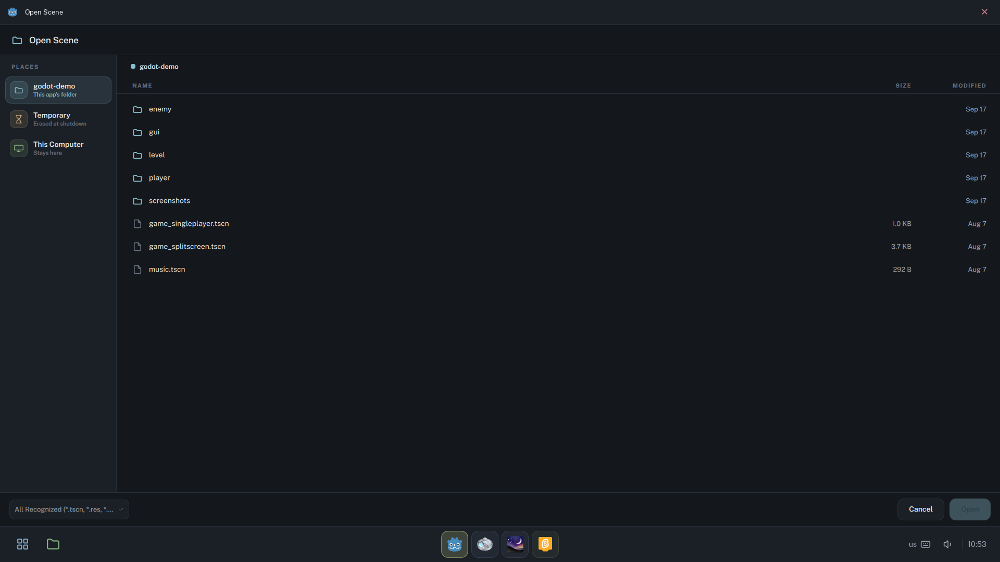

Local-first
Everything runs on the machines in the room. Apps, files, administration and updates all work offline; the internet is welcome, never required.
UjimaOS is a local-first operating system for rooms of shared Raspberry Pi computers. The machines find each other on the local network, answer to one admin USB stick, and update side by side, with no cloud, no server and no internet required.


Everything runs on the machines in the room. Apps, files, administration and updates all work offline; the internet is welcome, never required.
One command writes a card that is ready to boot, and an installer is on the way. Each machine names itself and finds the others on the network; there is nothing to set up machine by machine.
The system is read-only and comes back clean after every restart. Files live in three plain places, and one admin stick opens the Console on any machine.
There is no central server. The Console runs on whichever machine holds the admin stick and talks to the others directly, with every command signed by the room's key.
Every disk holds two complete systems. A new version is written beside the running one, tried once, and kept only when it works.
Made for the Raspberry Pi 5 and Pi 500: small, quiet, cheap to replace. A port to x86 computers is on the way.
Places where power and internet come and go, where anyone may sit down at any machine, and where nobody should need a technician to get the room working again.
In use since September 2026 in two computer labs near Arusha, Tanzania: a public lab and a school lab.
One home screen with every app grouped by what it is for. An app fills the screen with a single close button, and the bar keeps sound, the keyboard layout and the time within reach.
Every machine has three places for files, each one named for what happens to it. A USB stick shows up the moment it is plugged in, ready to take home.
Chromium, Electron, Qt and Godot apps open UjimaOS's own file picker, and the GTK apps open their dialogs on the same Places screen, so finding a file works the same way in every app. An app with a folder of its own gets it as a place.

Office, drawing, programming, maps and the night sky, installed on every machine. Apart from the Web app, none of them needs the internet. Adding an app is adding one folder.


Day to day, every machine works on its own, with no admin screens and nothing to log into. Plug the room's admin stick into any one of them and that machine opens the Console, a control panel that reaches every machine sharing the room's key. Pull the stick out and it is an ordinary computer again. There is no server and no password: the stick is the key.
Three panels, each for one kind of job.
The ring shows every machine in the room, what it is running and whether it is on. Pick a few machines, or all of them, and act on them at once.
From the Console, an admin can lock every screen for a break, or hold the room on one app. In focus mode the bars disappear and switching apps is off until the machine is released.


Give a machine its name, set the clock and time zone, choose keyboard layouts and where sound goes. The clock and the keyboard layouts go to the whole room in one click, so after a power cut every clock is put right at once.


Every disk holds two complete systems, slot A and slot B. An update from a USB stick is written into the slot that is not in use while the computer keeps working. The computer then restarts into it once, to keep it or go back. A version that does not start is never kept.

Plug in a stick that carries a release and the Update page offers it.

The other slot is written while the machine keeps working, and its settings are carried across.

After the restart, keep the new version or go back. If nobody decides, the next restart goes back on its own.
If a new version fails to come up, the firmware starts the previous one instead. The Update page says so plainly, and the version that failed stays in its slot until it is replaced.

UjimaOS is Raspberry Pi OS underneath, with a small runtime of its own on every machine. There is no server to keep alive and nothing in the cloud.
Boot, system and settings partitions for slot A and for slot B. People's files, the logs and the machine's identity are shared by both.
The system partition is mounted read-only with a throwaway layer on top, so what changes during a session is gone after a restart.
Machines take commands only when they are signed with the room's key. The key lives on the machines and on the admin stick.
Each machine announces itself on the local network and the Console sweeps the subnet as well, so a room fills in without anyone typing an address.
An operating system for shared computers. It turns a room of Raspberry Pi machines into one system that a single person can look after with a USB stick: the same desktop and apps on every machine, a Console to act on all of them at once, and updates with a way back.
UjimaOS is young and in active development, and it will not be considered stable until v1. Until then, expect rough edges and changes between releases. It already runs in two computer labs, but it is early software; the changelog says exactly what each release does.
No. The apps, people's files, the Console and updates all work offline, and machines find each other on the local network. With internet access the Web app browses as usual.
No. Every machine runs the same software. The Console runs on whichever machine holds the admin stick and talks to the others directly, so the room works the same whether one machine is on or twenty.
A Raspberry Pi 5 or Raspberry Pi 500, a microSD card of 32 GB or more, a screen, a keyboard and a mouse. The labs using it today run Pi 500s with 8 GB of memory and Pi 5s with 4 GB. A port to x86 computers is on the way.
An installer is planned and not out yet. Until it is, UjimaOS is built from source: on a Linux computer with the repository, one command builds the system and writes a card that is ready to boot, sudo bb build rpi disk /dev/<card> --wipe.
After that, new versions arrive on a USB stick through the Console's Update page. See the README for what the build needs.
Whoever holds the room's admin stick. Plugging it into any machine opens the Console; pulling it out closes it. Commands are signed with the room's key, and machines ignore anything that is not.
There are three places, each named for what happens to it. Temporary is erased at shutdown. This Computer stays, and is shared by everyone who uses that machine. A USB stick goes home with its owner. The system itself is read-only and resets on restart, so a session can never break it.
A new version is written into the slot that is not running and tried once. If it does not start, or someone chooses Go back, the computer returns to the version it ran before, with its settings intact. The Update page shows what happened.
Web (Chromium), ONLYOFFICE, LibreOffice Writer, Calc and Impress, GIMP, Inkscape, Tux Paint, Excalidraw, Godot, TurboWarp, Thonny, Geany, Marble, Stellarium, XaoS and TuxTyping. An app is one folder in the catalog, and extra apps can live on a machine's own storage.
The interface is in English. Each machine can carry several keyboard layouts, English and Swahili for example, and switching between them is one click in the bar or a Super+Space away.
Yes. UjimaOS is open source under the Mozilla Public License 2.0.
Read the code, build a card, or follow the field work behind it.